Placement
Placed, not searched.
A musician listens to your goals and recommends one teacher, with reasons. If it isn't right after the trial, you don't pay the placement fee.
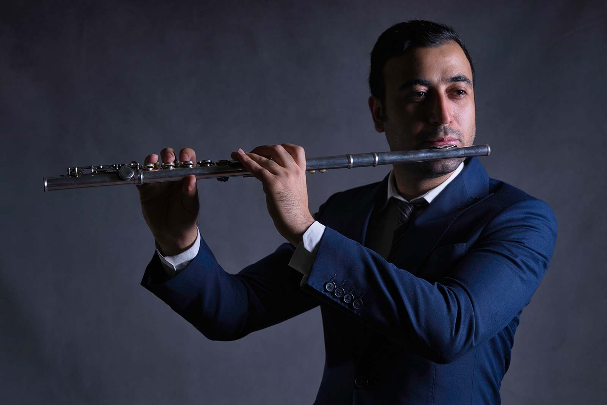
Arash Nazar
Master of Music, University of Tehran. Flute and piccolo, Tehran Symphony Orchestra.
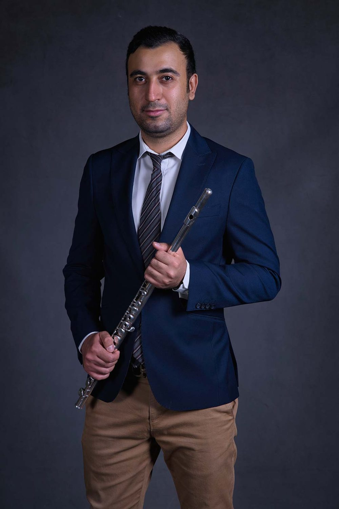
Master of Music, University of Tehran and first prize at the national conservatory festival, 2006.
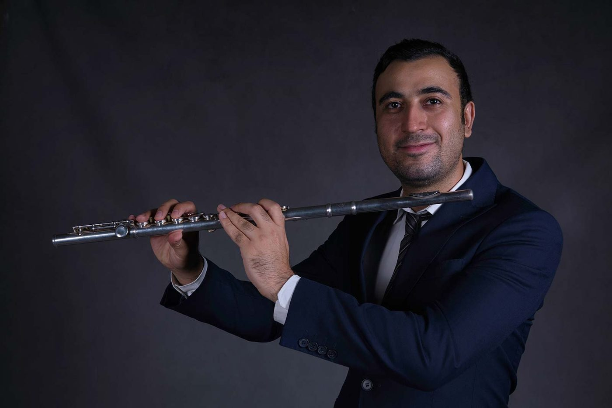
Flute and piccolo with the Tehran Symphony Orchestra, then the National Orchestra of Iran.
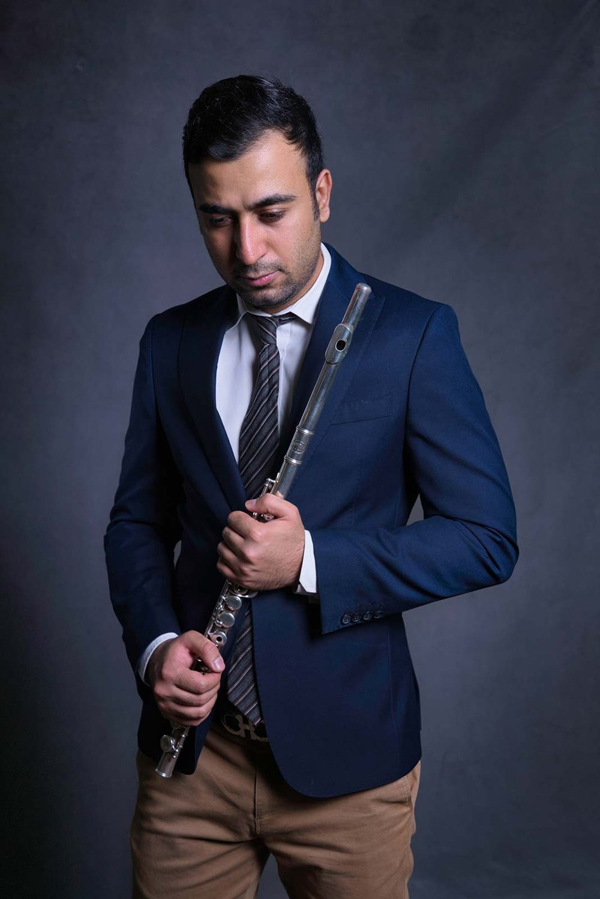
Twenty-one years studying under one teacher. He knows what a long apprenticeship costs and what it buys.
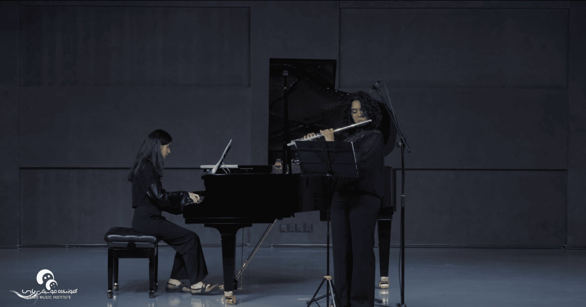
Students perform with accompaniment from the first year, not the fifth.
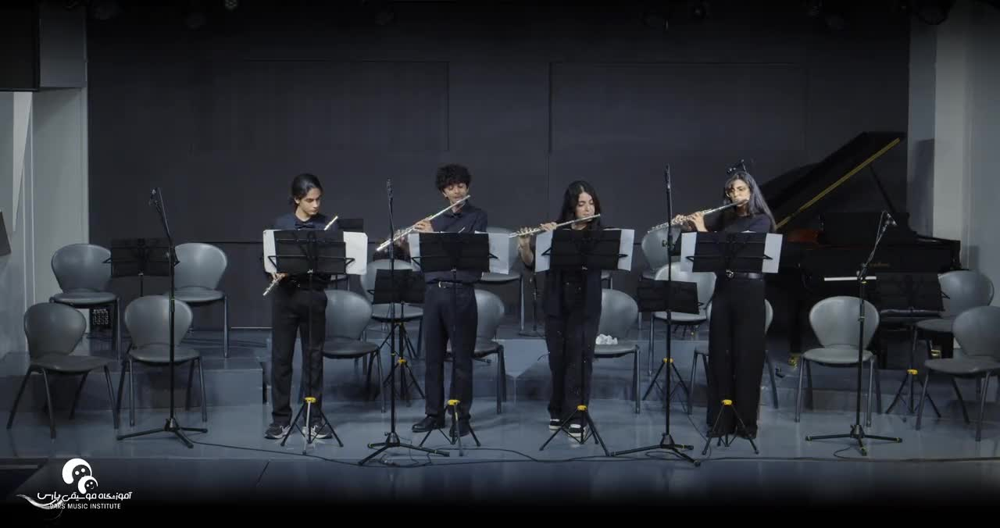
Teaching at Pars since 2010. Three published flute methods, all arranged and recorded by him.
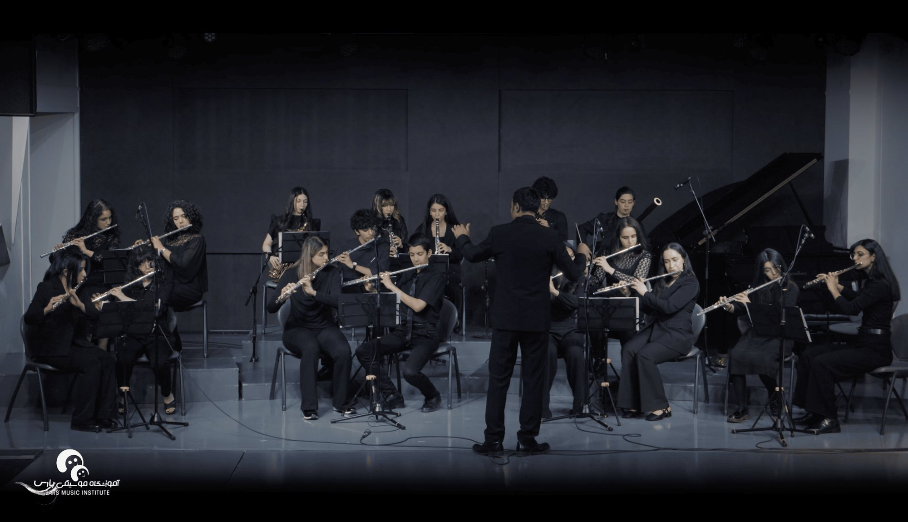
He conducts the woodwind ensemble your child will sit in.
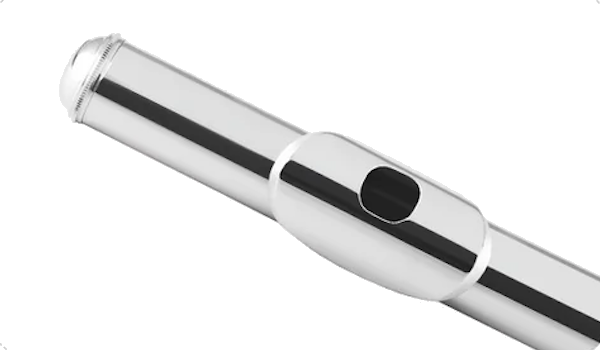
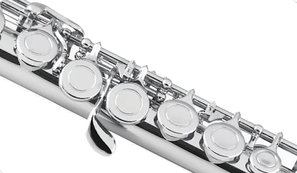
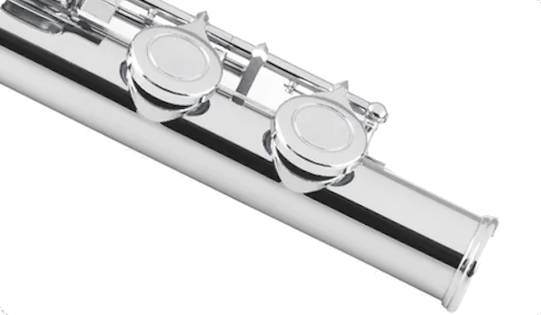
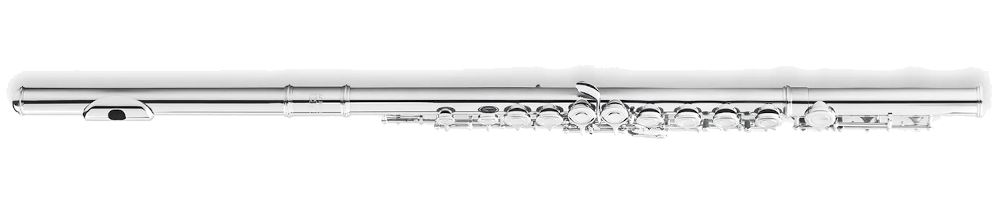
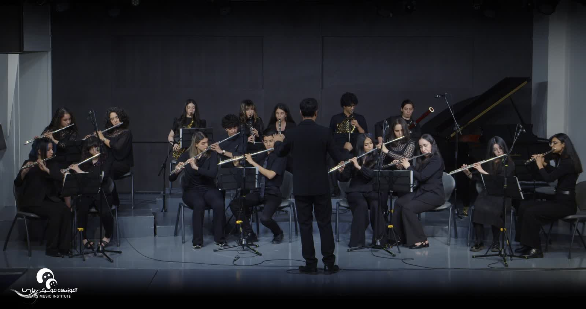
Solo. One player, one stage, nowhere to hide. Every student takes a solo slot at least once a year usually sooner than they feel ready, which is the point.
Practice
Rondo records what you practiced, how long, and where the intonation drifted. When you arrive on Sunday, the lesson starts where you actually are
Rondo is free for Pars students.2
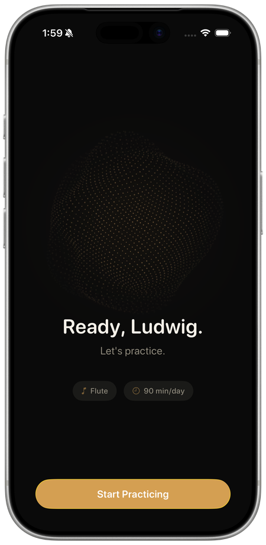
Placement
A musician listens to your goals and recommends one teacher, with reasons. If it isn't right after the trial, you don't pay the placement fee.
Continuity
No rotating instructors, no starting over each term. Lesson notes and repertoire follow the student, not the schedule.
Performance
Recitals and ensemble are included, never sold as an upgrade. Playing in front of people is part of learning, not a reward for it.
Formats
Our studio, your home, online, or a small group. Change format without changing teacher.
Get started
Tell us about the student. We'll set up a $40 trial with the teacher we think fits and only charge the placement fee if you decide to continue.